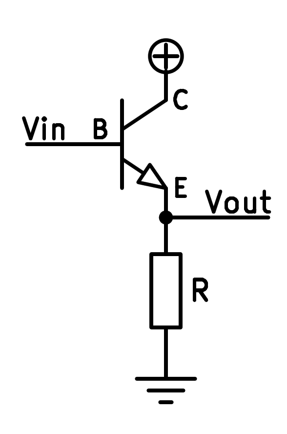

8. El transistor del col·leccionista comú¶
El transistor del col·leccionista comú també sol anomenar -se ** seguidor emissor **.
En aquesta configuració, el transistor té el col·lector connectat a la tensió positiva. El senyal d’entrada arriba per la base del transistor i el senyal amplificat surt de l’emissor del transistor.
{kind=link}

Esquema simplificat d’un transistor NPN en un col·leccionista comú o també conegut com "Emissuer Follower ".¶
Aquesta configuració permet amplificar el corrent d’entrada mantenint la tensió sense canvis. La tensió de sortida, per tant, serà pràcticament la mateixa que la tensió d’entrada, excepte la tensió del díode base emissor que es manté a un valor d’uns 0,65 volts.
Aquesta operació és útil en les etapes de sortida del circuit, on un corrent alt és necessari, per exemple, per moure un altaveu.
A continuació, es pot veure una simulació d’un transistor NPN en la configuració del col·leccionista comú. El transistor amplifica un senyal que entra a través de la base generant un senyal amb un corrent molt més gran per l'emissor.
La funció de cadascun dels components és la següent:
El generador de senyal alternatiu ** ** genera un senyal d’entrada de 2 volts màxims.
El condensador ** C1 ** té la funció de portar el senyal alternatiu del generador a la base del transistor, eliminant el senyal de corrent continu.
L’efecte pràctic és que la tensió del generador varia al voltant de zero volts i la tensió a la base del transistor varia al voltant dels 3 volts.
La resistència ** R2 ** afegeix a la base un petit corrent directe perquè el transistor pugui funcionar. Aquest corrent positiu que s’afegeix a la base s’anomena ** corrent de polarització **.
Tingueu en compte que el transistor només pot amplificar els corrents positius, de manera que cal afegir un petit corrent positiu al corrent d’entrada (positiu i negatiu) de manera que el transistor funcioni correctament.
El transistor ** npn ** rep un senyal de tensió per la base amb poc corrent i manté a l’emissor aquesta mateixa tensió, excepte la tensió d’uns 0,65 volts que sempre es troben entre la base i l’emissor.
El corrent que arriba per la base s’amplifica per circular, multiplicar -se, pel col·leccionista i per l’emissor.
La resistència ** R3 ** rep el corrent de l'emissor i el converteix en tensió de sortida.
El corrent que circula per la base del transistor circularà per aquesta resistència.
Exercicis¶
Dibuixa un esquema simplificat d’un transistor NPN que funciona en la configuració del col·leccionista comú, mostrant on es fa el senyal d’entrada i on surt el senyal amplificat.
Dibuixa un esquema realista d’un transistor NPN que treballa en la configuració del col·leccionista comú.
Quina és la funció principal d’un transistor que funciona en la configuració del col·leccionista comuna?
Dibuixeu un gràfic amb la tensió i la tensió de sortida del generador. Quina diferència podeu veure entre els gràfics?
Modifiqueu el valor de la resistència R2 per valer 20kohm. Dibuixeu el gràfic de la tensió de sortida.
Què passa amb la tensió de sortida quan augmenta la resistència R2?
Modifiqueu el valor de la resistència R2 per valer 4kohm. Dibuixeu el gràfic de la tensió de sortida.
Què passa amb la tensió de sortida quan disminueix la resistència R2?
Canvieu el valor de la resistència de sortida R3 a 1000 ohms al simulador.
Canvieu el valor de resistència R2 de manera que la tensió de sortida varia entre 1 vol i 5 volts.